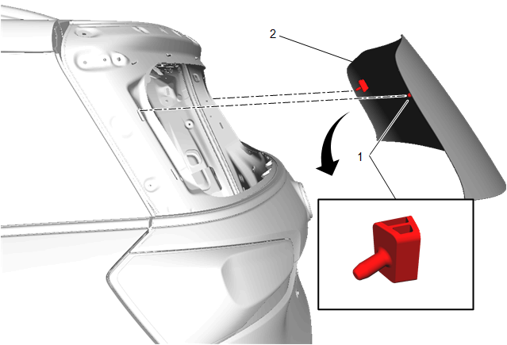

后窗的更换
专用工具
•
BO-24402-A
玻璃密封胶清除工具（刮刀）
。
•
拆卸车窗时，必需使用
BO-39032
固定车窗玻璃拆卸工具
或等效的工具。
•
使用符合上汽通用汽车公司规格的聚氨酯粘合剂系统
当地同等工具：
专用工具
拆卸程序
警告：
有关玻璃和钣金件处理的警告
警告：
有关车窗出现裂纹的警告
注意:
在切下固定窗前，在涂漆表面和内部装饰件的周围贴上双层遮蔽带。
1.
打开举升门。
2.
举升门下装饰板» 拆下–
举升门下装饰板的更换
3.
断开电气连接器。
4.
后窗刮水器电机» 拆下–
后窗刮水器电机的更换
5.
后端扰流器» 拆下–
后端扰流器的更换
6.
覆盖座椅和地毯以防碎玻璃。
注意:
保持工具刃口从车辆内部紧靠后车窗。从而使聚氨酯粘合剂与车窗分离。
7.
使用
BO-39032
固定车窗玻璃拆卸工具
或等效的工具来拆下车窗。
•
在夹焊凸缘留下一层聚氨酯底层。
•
清水是唯一适用的润滑剂。

8.
在助手的帮助下，从车上拆下定位销(1)和后窗(2)。
安装程序
1.
后窗玻璃» 安装–
使用粘合剂安装举升门车窗
2.
后端扰流器扰流器» 安装–
后端扰流器的更换
3.
后窗刮水器电机» 安装–
后窗刮水器电机的更换
4.
连接电气连接器。
注意:
安装举升门下装饰板之前，检查举升门孔中有无任何在玻璃拆卸期间掉落其中的定位销。
5.
举升门下装饰板» 安装–
举升门下装饰板的更换
6.
拆下胶带。
7.
关闭举升门。